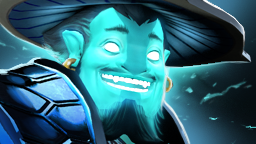
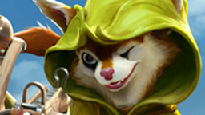
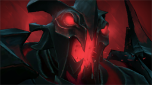
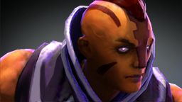
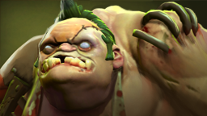
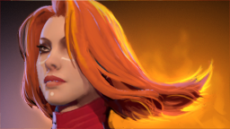

Storm Spirit
Повелитель молний, перемещающийся по карте в форме шара электрической энергии. Ball Lightning — его главный козырь в командных боях.
Компонент hero-card на Flexbox · Модификатор featured · Блок статистики
Заявки принимаются только от команд с верифицированными аккаунтами Dota 2. После дедлайна слот занять невозможно.

Повелитель молний, перемещающийся по карте в форме шара электрической энергии. Ball Lightning — его главный козырь в командных боях.

Белка-охотница из чащи — символ DotaArena 2026. Sharpshooter с огромной дальностью решает исход боя одним выстрелом. Именно она танцует на нашем фоне. Sniper в сравнении с ней — просто деревянный чурбак с прицелом.

Nevermore — собиратель душ. Requiem of Souls в командном бою — зрелище, ради которого стоит смотреть турнир. Аркана 2026 делает его просто прекрасным.

Главный контр-пик магических команд. Mana Break уничтожает ресурсы противника, Blink позволяет уходить от любой опасности. Фарм-машина поздней игры.

10 способностей, бесконечные комбо. Invoker требует сотни часов практики, но в руках мастера — один из самых красивых героев в Dota 2. Sun Strike через всю карту — момент турнира.

Самый популярный герой Dota 2 по числу игр. Meat Hook — способность, которая определяет ход матча. Один удачный крюк — и противник в панике.

Один из лучших carry для новичков. Blade Fury даёт неуязвимость к магии, Omnislash в финале — эффектная точка в командном бою.

Повелительница огня — мобильный нюкер с огромным burst-уроном. Laguna Blade в нужный момент удаляет одного героя из уравнения мгновенно.